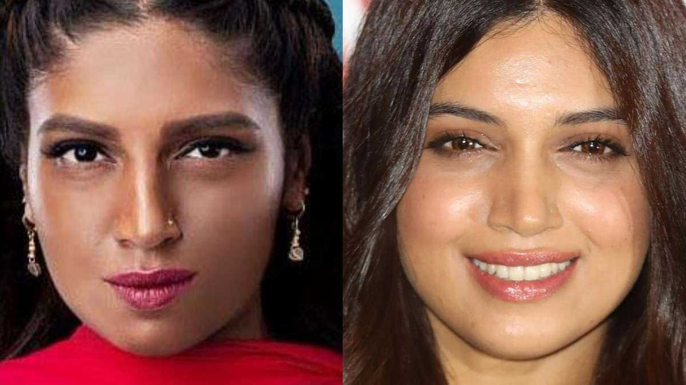
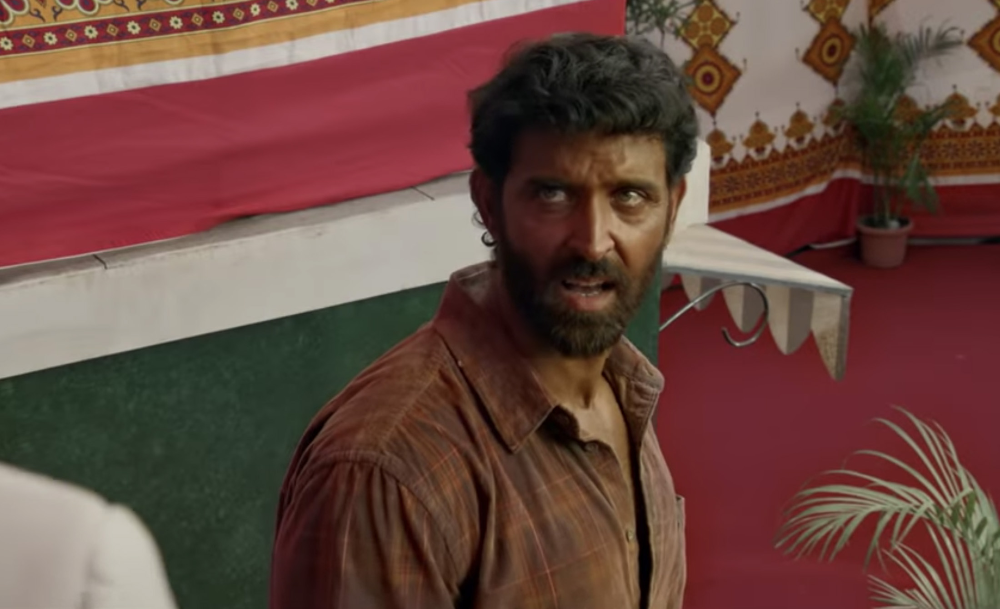

A continuous struggle in both Hollywood
and Bollywood is the willingness to allow
diverse people in main character roles of films. Just like in Hollywood
when Asians are only given supporting roles of either goofy or nerdy personas,
in Bollywood, people of darker complexions are usually in the role of a villager or someone who lives in poverty.
However, when the storyline of a movie requires a strong main character of a darker complexion, they do not use the same
dark actors used for the supporting roles. Instead they use makeup to make the fairer and more "attractive" actors darker.